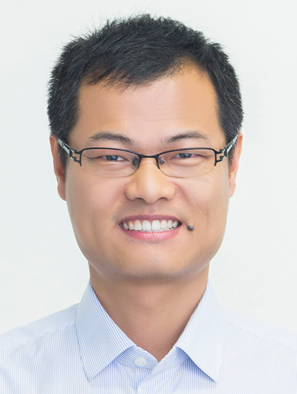

Faculty

Asst. Prof. Peng Song
Office: 1.202.17
Email:peng_song@sutd.edu.sg
Peng Song is an Assistant Professor at SUTD since 2019.
Prior to joining SUTD, he was a research scientist in EPFL, Switzerland, an associate researcher in
University of Science and Technology of China, and a research fellow in Nanyang
Technological University, Singapore.
Peng Song received his Bachelor's degree from Harbin Institute of Technology, China in 2007, Master's degree from Harbin Institute of Technology (Shenzhen), China in 2009, and PhD from Nanyang Technological University, Singapore, in 2013.
Find more about Peng: SUTD Profile Google Scholar dblp LinkedIn CV
Peng Song received his Bachelor's degree from Harbin Institute of Technology, China in 2007, Master's degree from Harbin Institute of Technology (Shenzhen), China in 2009, and PhD from Nanyang Technological University, Singapore, in 2013.
Find more about Peng: SUTD Profile Google Scholar dblp LinkedIn CV
PhD Students
Ziqi Wang
Email:
ziqi.wang@epfl.ch
Personal Webpage:
kiki007.github.io
Ziqi Wang is a Ph.D. candidate at the School of Computer and Communication Sciences, EPFL, under the
supervision of Prof. Mark Pauly (EPFL) and
Prof. Peng Song (SUTD). He received his bachelor's degree in Mathematics in 2017 from University of
Science and Technology of China.
His research interests focus on geometry processing, architecture geometry, and digital fabrication.

Ziyan Miao
Office: 1.710
Email:
ziyan_miao@mymail.sutd.edu.sg
Miao Ziyan is a PhD Candidate in the Pillar of Information Systems Technology and Design, SUTD, under
the supervision of Prof. Ngai-Man
Cheung and Prof. Peng Song. Prior to her PhD studies, she received both her M.Sc and B.Eng degrees
from Nanyang Technological University (NTU). Her research interests are computer vision, computer
graphics and deep learning.

Rulin Chen
Email:
rulin_chen@mymail.sutd.edu.sg
Rulin Chen is a PhD Candidate in the Pillar of Information Systems Technology and Design, SUTD, under
the supervision of Prof. Peng Song. Prior to his PhD studies, he received his bachelor’s degree in
Electronic Information Engineering from Shantou University. His research interests are computer graphics
and deep learning.
Visiting Students

Yucheng Sun
Office: 1.304
Email:
yucheng_sun@sutd.edu.sg
Yucheng Sun is a visiting student at the Computer Graphics Laboratory in SUTD supervised by Prof. Peng
Song.
He is currently a master student in the School of Mathematics, University of Science and Technology of
China (USTC), under the supervision of Prof.
Ligang Liu.
He received his B.S. in Mathematics from School for Gifted Young, USTC in 2018.
His research interests are computer graphics and computational fabrication.